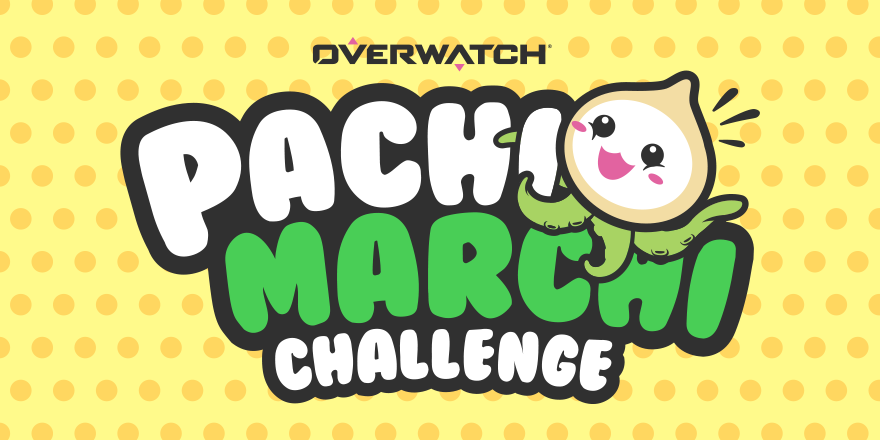
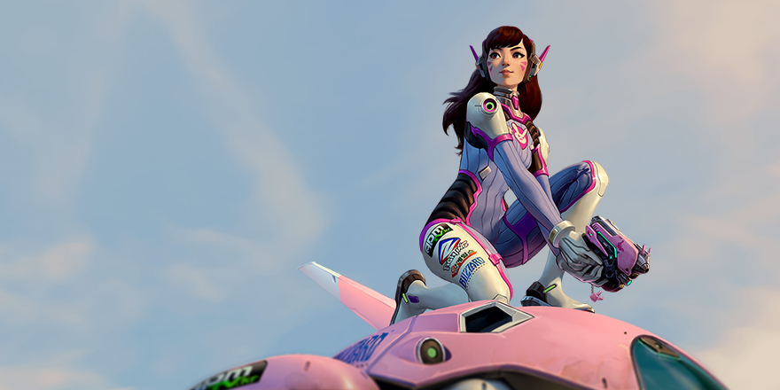
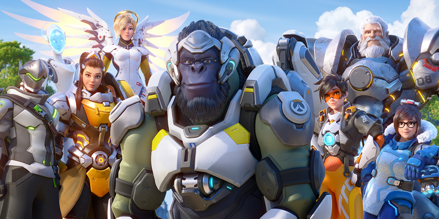

Notícias:
O criador dos Pachimari e artista conceitual por trás do visual do Roadhog para o Pachimarço fala sobre a criação de visuais e o legado desse bichinho fofinho.

Entre para o Fã-Clube dos Pachimari com o Desafio Pachimarço!

Overwatch na BlizzConline: recapitulação

Bastidores do desenvolvimento de Overwatch 2